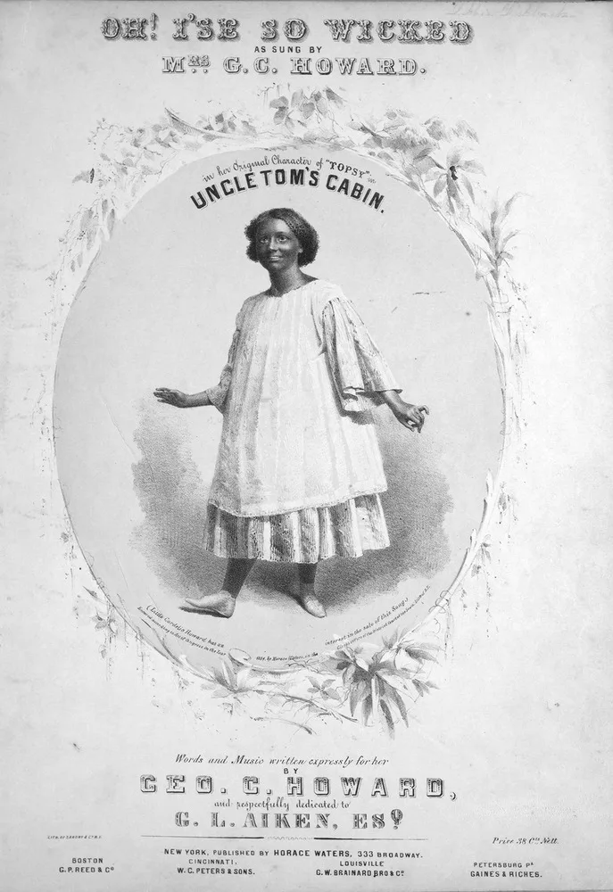
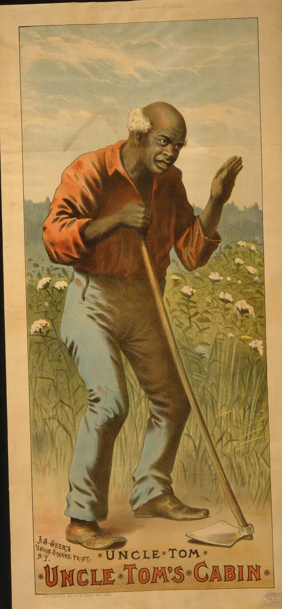
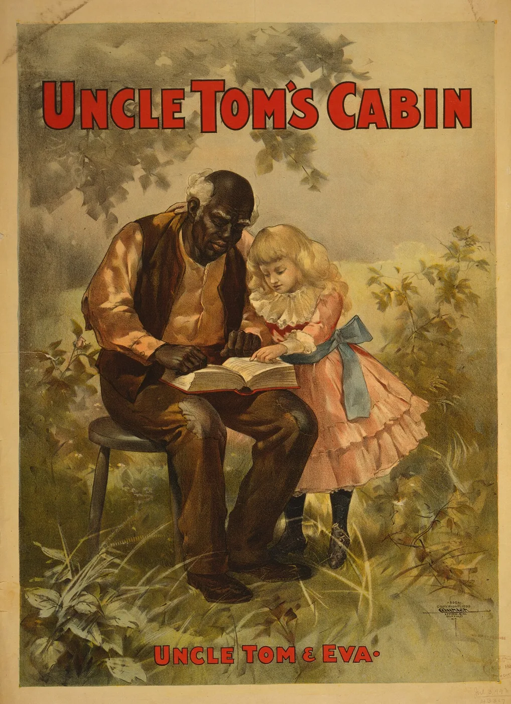
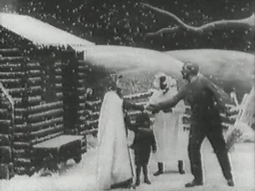
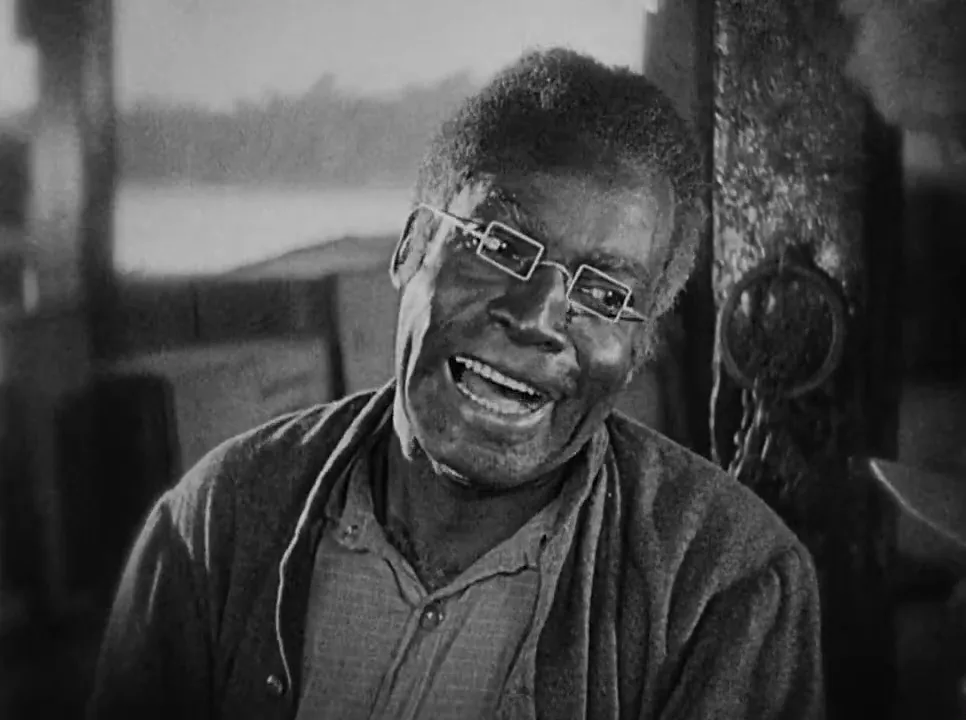
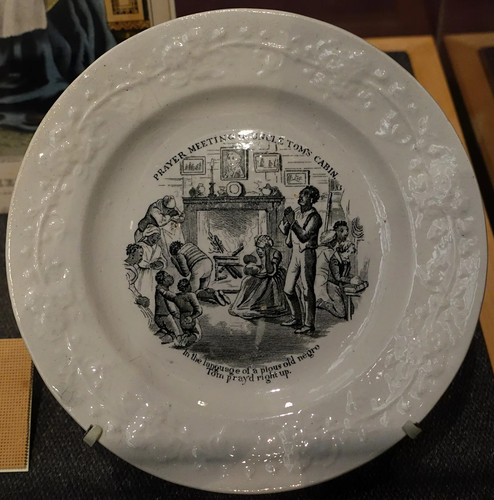
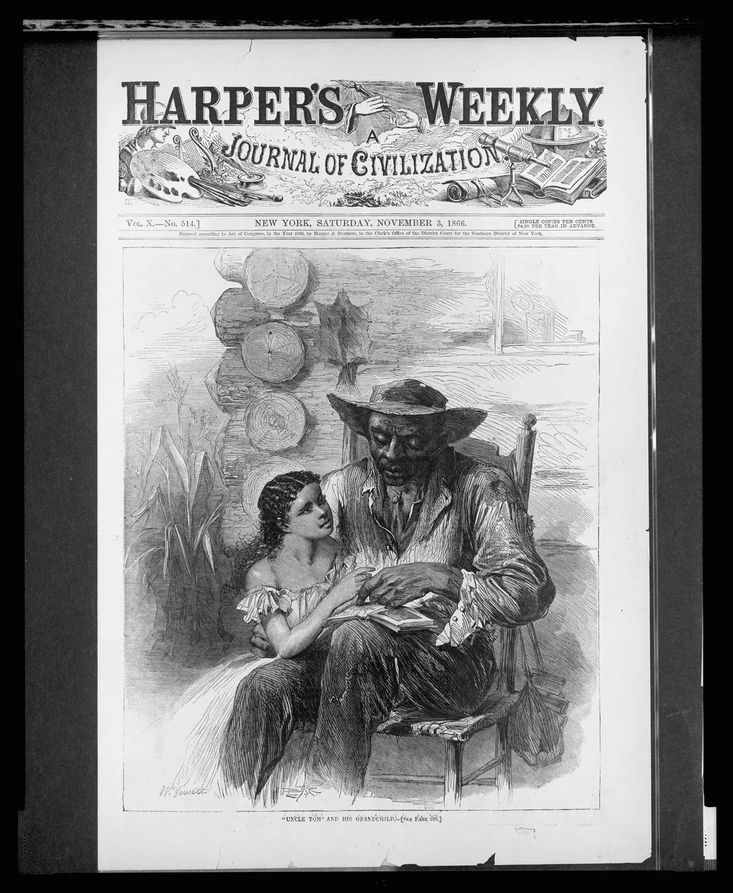
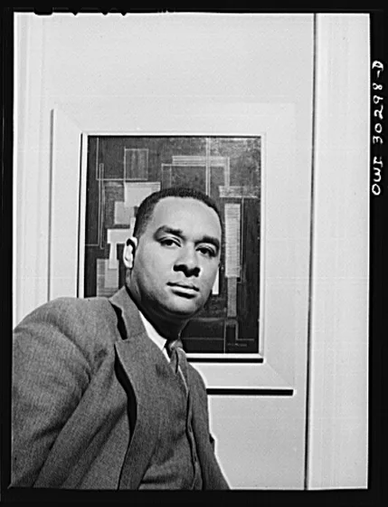

HIST 101 · Chapter 13 · Mini Lecture
Uncle Tom
From Hero to Insult
How a character’s name changed meaning, 1852 to today

Content note: this lecture shows racist images from the 1800s and 1900s and discusses an insult. We look at them to understand how they worked.
Tom in the Novel
- “A large, broad-chested, powerfully-made man,” with a wife, Aunt Chloe, and young children
- A devout Christian, trusted to run the Shelby farm in Kentucky
- Sold South, he refuses Simon Legree’s order to whip other enslaved people
- Refuses to betray , and dies forgiving the men who beat him

The First Tom Plays (1852–1853)
- U.S. law did not let Stowe control stage versions, and she was paid nothing for them
- George L. Aiken’s version opened in Troy, New York, in 1852, then ran for months in New York City
- H. J. Conway’s version, staged by P. T. Barnum in 1853, softened the antislavery message
- White actors usually played Tom in blackface makeup


Minstrel Burlesques
- Blackface minstrel shows, white men in burnt-cork makeup mocking Black people, were the most popular entertainment of the day
- Within a year, minstrel troupes staged comic “Uncle Tom” acts
- Some turned the story upside down: happy slaves, kind masters, no tragedy
- Later Tom shows borrowed minstrel songs, dances, and jokes

Tom Grows Old
- In the novel Tom was strong and middle-aged
- On stage and in posters he became white-haired and stooped, leaning on a cane or a hoe
- Old age made him look gentle and harmless rather than strong
- His refusals to obey Legree faded; his patience and loyalty took center stage


Tom Shows on the Road
- After the Civil War, touring “Tom shows” crossed the country by rail
- By the 1890s, hundreds of companies were on the road
- “Mammoth” shows added two Topsys, bloodhounds, brass bands, and street parades
- Tom shows kept touring well into the twentieth century

Tom on Film
- 1903: Edwin S. Porter’s Uncle Tom’s Cabin for the Edison company, one of the first long American films
- Often called the most-filmed story of the silent era, with about nine versions from 1903 to 1927
- 1914: Sam Lucas became one of the first Black actors to play Tom on film; most earlier Toms were white men in blackface
- 1927: Universal’s big-budget version starred James B. Lowe



Selling Uncle Tom
- From 1852, Tom appeared on plates, figurines, handkerchiefs, and games
- After the war, toys and trade cards turned Black people into grinning caricatures
- The 1880s “Uncle Tom” bank made a Black face into a coin slot
- Mass-produced images taught millions what “Uncle Tom” looked like, without the novel’s story


The “Faithful Old Servant”
- After 1865, white Southerners’ “Lost Cause” story claimed slavery had been kind and enslaved people loyal
- Stories such as Thomas Nelson Page’s In Ole Virginia (1887) featured devoted old “uncles” and “mammies”
- In 1895, a monument to “faithful slaves” went up in Fort Mill, South Carolina, and ad mascots such as Aunt Jemima sold the same picture
- The aged, gentle stage Tom fit this image perfectly

A New Insult (1910s–1920s)
- Black activists and writers turned “Uncle Tom” into an epithet
- It came to mean a Black leader who pleased white people at the expense of other Black people
- Marcus Garvey’s Universal Negro Improvement Association (UNIA) used it against rivals
- 1923: Garvey’s paper, the Negro World, denounced eight critics as “Uncle Tom” Negroes

Writers Break with Tom
- 1938: Richard Wright titled his stories of Black Southerners who fight back Uncle Tom’s Children
- His epigraph: the old insult “He’s an Uncle Tom!” had given way to a new one: “Uncle Tom is dead!”
- 1949: James Baldwin’s essay “Everybody’s Protest Novel” attacked Stowe’s book itself
- Baldwin argued that Stowe had made Tom a symbol, not a full human being


Civil Rights and Black Power
- 1963: Malcolm X attacked “twentieth-century Uncle Toms,” Black leaders who kept other Black people “in check”
- He linked them to the “house Negro” of slavery, though Stowe’s Tom refused to police others
- 1965: Muhammad Ali called Floyd Patterson an “Uncle Tom” before their title fight
- 1971: Ali used it on Joe Frazier, who had supported him; Frazier resented it for decades

Uncle Tom Today
- Still hurled as a political insult at Black public figures, often at Black conservatives
- Most people who use it have never read the novel
- Scholars such as Adena Spingarn (2018) trace how the name changed meaning
- Some readers now stress that Stowe’s Tom resisted: he would not whip others or betray , even unto death

Who Decides?
Who decides what a character means: the author who wrote him, or the culture that retells him?
- 1852: Stowe wrote a Christian martyr who refused to betray others
- 1850s–1920s: stage, toys, ads, and Lost Cause writers made a contented old servant
- 1910s–1970s: Black activists and writers turned that servant into an insult
- Today: readers are arguing about Tom again
⏸ Fill-In Quiz
Answer in your own words, using slides b through l. Your answers save in this browser as you type.
Sources
Primary sources
- Harriet Beecher Stowe, Uncle Tom’s Cabin; or, Life Among the Lowly (Boston: John P. Jewett, 1852), illustrations by Hammatt Billings.
- George L. Aiken, Uncle Tom’s Cabin (play, 1852); H. J. Conway, Uncle Tom’s Cabin (play, 1852–53).
- Thomas Nelson Page, In Ole Virginia (1887).
- Marcus Garvey, “Eight ‘Uncle Tom’ Negroes,” Negro World, February 1923.
- Richard Wright, Uncle Tom’s Children (1938; expanded 1940).
- James Baldwin, “Everybody’s Protest Novel,” Zero and Partisan Review (1949); reprinted in Notes of a Native Son (1955).
- Malcolm X, “Message to the Grass Roots,” Detroit, November 10, 1963.
- Floyd Patterson, “In Defense of Cassius Clay,” Esquire (1966).
- Edwin S. Porter, Uncle Tom’s Cabin (Edison, 1903); Harry A. Pollard, Uncle Tom’s Cabin (Universal, 1927).
- Images: Library of Congress (posters, Harper’s Weekly, Garvey, Wright, Baldwin, Malcolm X, Ali), British Museum, Johns Hopkins Levy Sheet Music Collection, Missouri History Museum, Internet Archive, and UVA, via Wikimedia Commons (public domain); NMAH plate photo by Daderot (CC0).
Secondary sources
- Adena Spingarn, Uncle Tom: From Martyr to Traitor (Stanford University Press, 2018).
- Stephen Railton, ed., Uncle Tom’s Cabin & American Culture, University of Virginia (utc.iath.virginia.edu).
- Sarah Meer, Uncle Tom Mania: Slavery, Minstrelsy, and Transatlantic Culture in the 1850s (University of Georgia Press, 2005).
- Eric Lott, Love and Theft: Blackface Minstrelsy and the American Working Class (Oxford University Press, 1993).
- Patricia A. Turner, Ceramic Uncles & Celluloid Mammies: Black Images and Their Influence on Culture (Anchor, 1994).
- Jo-Ann Morgan, Uncle Tom’s Cabin as Visual Culture (University of Missouri Press, 2007).
- David W. Blight, Race and Reunion: The Civil War in American Memory (Harvard University Press, 2001).
- Henry Louis Gates Jr. and Hollis Robbins, eds., The Annotated Uncle Tom’s Cabin (Norton, 2007).
- David Remnick, King of the World: Muhammad Ali and the Rise of an American Hero (Random House, 1998).